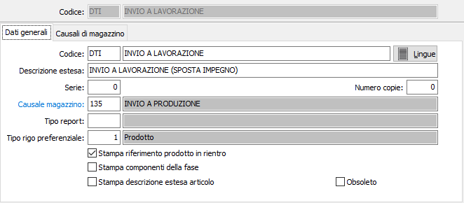
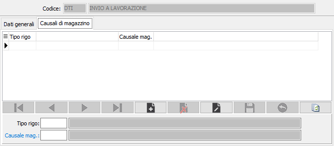

Causali DDT terzisti
Le causali vengono utilizzate al momento dell’inserimento di un Ddt e determinano il tipo di documento da emettere.
Se è presente la procedura di Gestione Magazzino, nella causale può essere inserita la relativa causale di magazzino affinché la registrazione di un Ddt determini, senza ulteriori interventi da parte dell’operatore, una scrittura di prima nota di magazzino.
La finestra video di manutenzione Causali Ddt si articola su 2 pagine video, suddivise in due sezioni. La sezione superiore rimane invariata in tutte le pagine video e contiene le informazioni anagrafiche della causale stessa.
Dati generali

CODICE: Codice alfanumerico di 3 caratteri, a libera scelta dell'utente, per individuare la causale attiva. Sul campo sono attive le funzioni di ricerca (F9) sulla tabella stessa.
DESCRIZIONE: Campo alfanumerico di 30 caratteri per inserire la descrizione della causale attiva. Questa descrizione viene stampata sui documenti se il programma di stampa lo prevede.
LINGUE: bottone che attiva la tabella di memorizzazione della descrizione in esame nelle varie lingue utilizzate dall’utente.
DESCRIZIONE ESTESA: Campo alfanumerico di 60 caratteri per inserire la descrizione estera della causale attiva ad uso interno dell’utente. Questa descrizione non viene stampata sui documenti ma viene visualizzata nelle viste.
SERIE: Campo numerico per inserire il numero di serie del documento. Ciascuna serie attiva una propria numerazione di documenti. E’ necessario, in fase di immissione del documento, per proporre automaticamente e correttamente il numero progressivo del documento acquisito dalla tabella protocolli.
NUMERO COPIE: Indicare il numero di copie da stampare, se zero saranno stampate le copie previste sull'anagrafica del cliente.
CAUSALE MAGAZZINO: codice alfanumerico di 3 caratteri, presente nella tabella Causali di magazzino, che individua i parametri del movimento di magazzino generato automaticamente dal documento attivo. L’informazione può essere omessa in caso di assenza della procedura Gestione magazzino oppure se non si intende generare automaticamente movimenti di magazzino. Sul campo sono attive le funzioni di ricerca (F9) e manutenzione (CTRL+W) sulla tabella stessa.
TIPO REPORT: consente di specificare un tipo di report specifico per i documenti che saranno emessi utilizzando questa causale. Sul campo sono attive le funzioni di ricerca (F9).
TIPO RIGO PREFERENZIALE: Indica il tipo rigo da proporre in fase di emissione dell'ordine. Sul campo sono attive le funzioni di ricerca (F9).
STAMPA RIFERIMENTO PRODOTTO IN RIENTRO: Se spuntato, in fase di stampa Ddt viene riportato il riferimento al prodotto/semilavorato che dovrà rientrare al termine della fase di lavorazione.
STAMPA COMPONENTI DELLA FASE: Il parametro è valido per i prodotti alla fase; indica se stampare, al posto del rigo prodotto, i componenti assegnati alla fase con le relative quantità rapportate alla quantità del prodotto (casella con segno di spunta).
ORDINATO A PRODUZIONE: Flag per abilitare la gestione dell’ordinato a produzione. La presenza della spunta determina l’aggiornamento dell’ordinato a produzione da parte della causale attiva. In caso contrario, l’aggiornamento non viene effettuato. Il campo è visibile se non è presente il modulo di produzione.
IMPEGNATO DA PRODUZIONE: Flag per abilitare la gestione dell’impegnato da produzione. La presenza della spunta determina l’aggiornamento dell’impegnato da produzione da parte della causale attiva. In caso contrario, l’aggiornamento non viene effettuato. Il campo è visibile se non è presente il modulo di produzione.
STAMPA DESCRIZIONE ESTESA ARTICOLO: Indica se sul Ddt deve essere riportata e stampata la descrizione estesa dell'articolo (casella con segno di spunta).
OBSOLETO: flag attivabile dall’utente per inibire il possibile utilizzo dell’elemento di tabella in esame nelle successive transazioni.
Causali di magazzino
La finestra permette di associare al singolo tipo rigo una specifica causale di magazzino, diversa dalla causale di magazzino principale.

TIPO RIGO: Indica il tipo rigo da associare alla causale. Sul campo sono attive le funzioni di ricerca (F9).
CAUSALE MAGAZZINO: codice alfanumerico di 3 caratteri, presente nella tabella Causali di magazzino, che individua i parametri del movimento di magazzino generato automaticamente dal documento attivo per il tipo rigo richiesto. Sul campo sono attive le funzioni di ricerca (F9) e manutenzione (CTRL+W) sulla tabella stessa.